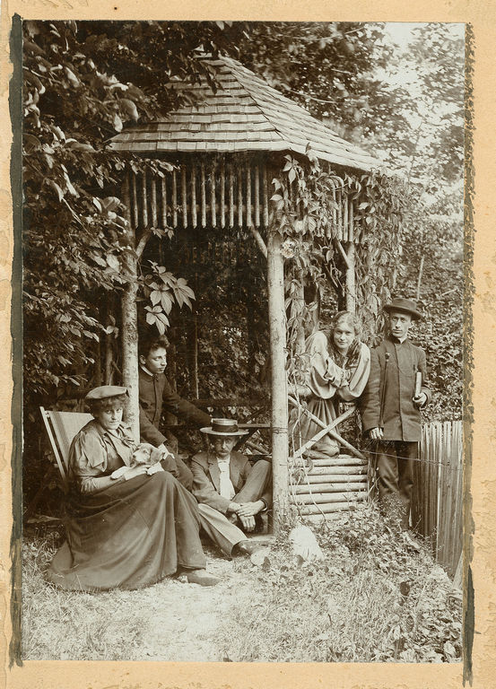
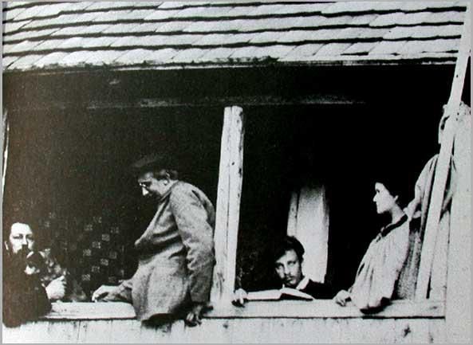
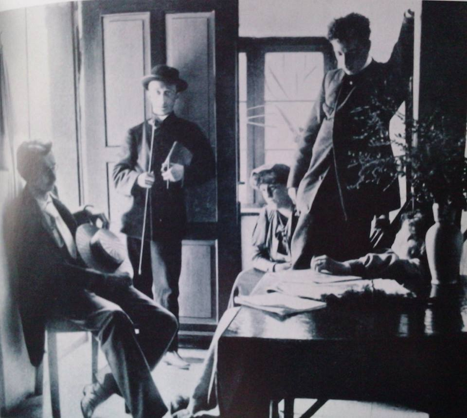
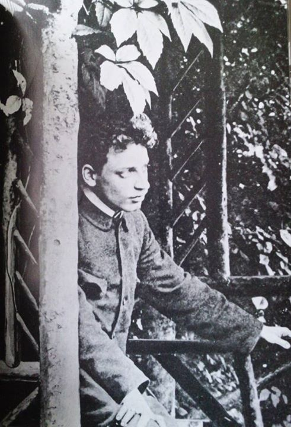

Rilke na starej fotografii
Wolfratshausen 1897
Młodość Rilkego. Lato roku 1897, spędzone w sielskim Wolfratshausen w dolinie Izary, to bodaj najszczęśliwszy okres w życiu poety. W letnim domku, nazwanym na cześć Lou Andreas-Salomé „Loufried”, oprócz Rilkego i Lou przebywali również przyjaciółka Lou, baronówna Frieda von Bülow, monachijski architekt August Endell, rosyjski pisarz i krytyk literacki Akim Woliński, a także, przez miesiąc, mąż Lou, Friedrich Karl Andreas.
W altanie w Wolfratshausen; od lewej: Frieda von Bülow, Rilke, Endell, Lou i Akim Woliński
Od lewej: profesor Friedrich Karl Andreas, architekt August Endell, zaczytany Rilke oraz Lou Andreas-Salomé.
Tyś była przeciwieństwem wszelkiego zwątpienia…
Byłaś dla mnie świadectwem tego, że wszystko, czegokolwiek się dotkniesz, na co spojrzysz, co osiągasz, że to istnieje naprawdę
— pisał Rilke z Paryża do Lou Andreas-Salomé.
Od lewej: monachijski architekt August Endell, rosyjski pisarz i krytyk literacki Akim Woliński, przyjaciółka Lou, baronówna Frieda von Bülow, Rilke oraz nieco zasłonięta Lou Andreas-Salomé.
Uchwycone na fotografii zakochane spojrzenie dwudziestodwuletniego Rilkego. Lato roku 1897, spędzone razem z Lou Andreas-Salomé w Wolfratshausen w dolinie Izary.